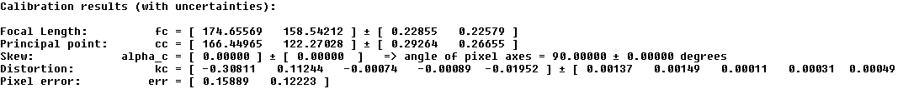
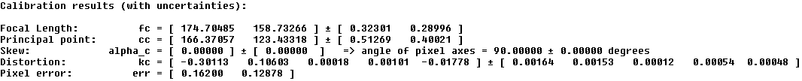
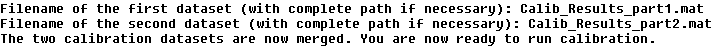
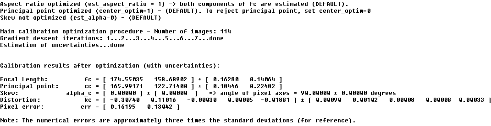
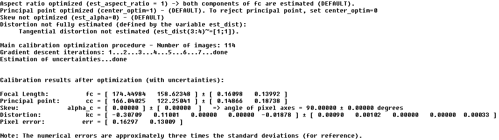
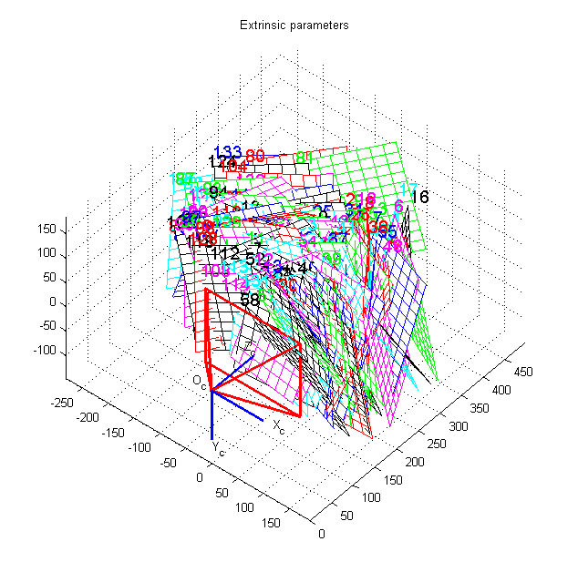

Sixth calibration
example - Combining two independent calibrations of the same camera
This example gives a quick demonstration of the script merge_two_datasets.m that lets you easily combine two calibration datasets of the same camera created independently.
Download the two independent calibration datasets merging_example.zip (847Kb zipped). This file contains two "Calib_Results.mat" files that corresponds to two independent calibrations of the same camera: Calib_Results_part1.mat, Calib_Results_part2.mat. The objective of this example is to merge the data from both files to achieve more accurate estimates of the intrinsic parameters.
Before merging the two files into a single calibration, inspect the intrinsic parameters computed in both calibration cases by clicking on Show calib results in the main calibration GUI after loading the ".mat" files.
The intrinsic parameters of the first calibration (Calib_Results_part1.mat) should be:

The intrinsic parameters of the second calibration (Calib_Results_part2.mat) should be:

Let us now merge the two calibration datasets together. In the main matlab window, run the script merge_two_datasets.
Enter the first calibration file name Calib_Results_part1.mat followed by the second calibration filename Calib_Results_part2.mat.

You are now ready to run a global calibration optimization by clicking on Calibration in the main toolbox GUI window:

Observe that the uncertainties on the intrinsic parameters are smaller than that of the two independent calibrations.
Going further in the analysis of the results, observe that the tangential distortion term is very small (it can be better seen by running the distortion inspection tool visualize_distortions). Therefore, it makes sense to reduce the distortion model by eliminating the tangential term from the optimization:
Then run calibration on this reduced model:

The model reduction has further reduced the uncertainties on the intrinsic parameters (especially for the principal point).
In order to visualize the extrinsic parameters, you may click on Show Extrinsic in the main GUI window:

Finally, save the global calibration results under Calib_Results.mat by clicking on Save: